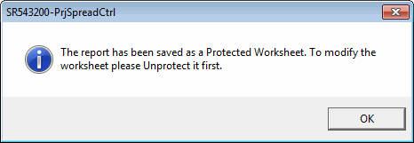
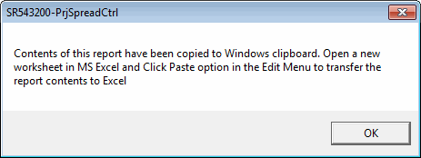

On selecting this option the Save As dialog box opens with default file type chosen as CSV (comma separated value). You can choose the filename and location to save the file.
Successful completion of the process creates a .csv file containing the report exported.
Click this button to remove all the filters applied and load the report with all rows.
On selection of this option report will be filtered based on the value in the current cell. You can apply Filter by selection repeatedly at different levels.
Identify the value on which data needs to be filtered and make that cell active. Apply Filter by selection.
On selecting this option the Save to Excel File dialog box opens. You can choose the file name and location to save the file. The newly created Excel workbook will be protected by default.
On successful completion of export to Excel, a message will be displayed as shown.

To unprotect the worksheet, open the workbook and select Tools > Protection > Unprotect.
On selecting this option, the report is copied to Windows Clipboard in a spreadsheet friendly format and a message is displayed as shown.

Once the report is copied to clipboard, it can also be pasted in notepad, word, etc.
Report will be printed based on the predefined report format.
On selecting this option, the Print Setup dialog box is displayed, where you can make necessary changes in respect of Printer, Page Size, Source, etc. Inkjet and laser printers are preferred, as the formatting and page setup will remain intact. The following situations would be logically handled as explained below.
|
Situation |
Result |
|
information can be printed without making any changes |
the sheet prints in portrait mode |
|
sheet is wider than the portrait page |
the sheet prints in landscape mode |
|
information does not fit in landscape mode, but will fit in landscape mode when the sheet is reduced up to 60% of its original size |
the sheet is scaled to fit with in the page |
|
information cannot be scaled to fit the sheet |
tries to reduce the column widths to accommodate the widest string within each column |
|
all attempts to make the sheet print within a page fail |
printing resumes normally in the current printer orientation with no reductions |
On selecting this option, the print preview is shown.
On selecting this option, the Find dialog box is displayed where you can enter the string/ value to find. The domain of search is restricted to the current column. In case a range of cells is selected in the spreadsheet, Find does not allow you to proceed.
On selecting this option subtotals and grand totals will be displayed at respective positions based on the following.
If the current column is one of the defined Class1, Class2, Subclass1 or Subclass2 categories — sorting would be done based on the columns in a left to right manner up to the current column and subtotals will be displayed at each change of category hierarchically.
If the current column is one other than the categories listed — only grand totals will be displayed.
Group total values and grand totals are displayed in the quantity and value columns. Totals are also displayed in any column with values calculated based on these two.
Selecting this option will eliminate the display of duplicate values appearing in consecutive rows in the current column. This enables the you to view/ print the report in a better way.
On selection of this option you can Freeze / UnFreeze the title panes based on the currently active cell.
On selection of this option, you can sort the report in ascending or descending order based on the values in the current column.